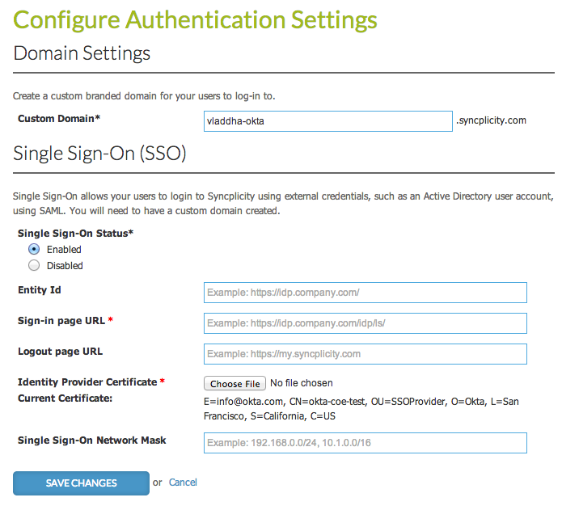

Syncplicity supports only Sp-Initiated SSO and idp initiated SSO is not supported as of now.
Login into syncplicity( url : https://my.syncplicity.com) using your credentials.
Click on link Admin > Policy > Configure Authentication Settings.

In Single Sign-on Status* check Enabled.
Provide Entity ID:
Sign in to the Okta Admin app to have this variable generated for youSign in page URL (i.e. Login redirect URL):
Sign in to the Okta Admin app to have this variable generated for youLogout page URL:
Sign in to the Okta Admin app to have this variable generated for youDownload your Okta Identity Provider Certificate & upload in Identity Provider Certificate:
Sign in to the Okta Admin app to have this variable generated for you